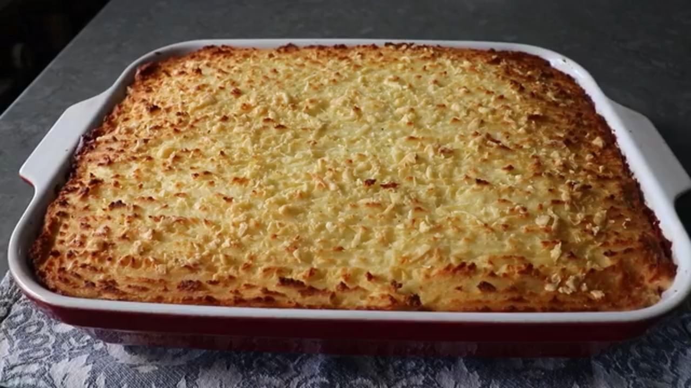

Corned Beef and Cabbage Shepherd's Pie

Description
This is a combination of my favorite corned beef and cabbage recipe, and my favorite shepherd's pie recipe.
It involves a few extra steps when compared to your traditional boiled beef dinner, but the payoff at the end is well worth the extra effort.
By layering the ingredients in a casserole dish, each serving has the perfect proportions of beef, cabbage, carrots, and potatoes.
Ingredients
- 1 (4 pound) corned beef brisket with spice packet
- 1 medium yellow onion, thickly sliced
- 2 stalks celery, cut into 1-inch pieces
- 3 quarts cold water, or as needed to cover
- kosher salt to taste
- 2 small heads Savoy cabbage, cored and cut into 2-inch pieces
- 3 medium carrots, thickly sliced
- 5 large russet potatoes, quartered
- ½ cup unsalted butter, cut into slices
- freshly ground black pepper to taste
- 1 pinch cayenne pepper, or to taste
- 1 cup milk
- ¾ cup grated Irish Cheddar cheese, plus more to taste
- 1 tablespoon chopped scallions, or to taste
Steps
- Put corned beef in a pot with onion and celery and sprinkle spice packet over top. Pour in cold water to cover. Turn heat to high and bring to a boil. Skim off and discard any foam if desired. Once boiling, reduce heat to low, cover, and simmer gently until tender, about 3 1/2 hours. An instant-read thermometer inserted into the center should read at least 145 degrees F (63 degrees C).
- Carefully remove corned beef to a bowl and let cool. Taste broth and add salt if needed.
- Bring broth to a boil over high heat. Add cabbage to the boiling broth. Cook until cabbage just starts to soften and sweeten up, about 5 minutes. Use a slotted spoon and remove cabbage to a bowl.
- Add carrots to the boiling broth. Cook until carrots start to soften, about 5 minutes. Use a slotted spoon and remove carrots to a bowl.
- Add potatoes to the boiling broth and reduce heat to medium. Cook until tender, 15 to 20 minutes.
- While the potatoes are cooking, slice the cooled corned beef along the fatty seam to separate into 2 pieces. Identify the direction of the meat fibers and cut across them (against the grain) to slice into 1/4-inch thick slices, trimming off and discarding any giant pieces of fat. Set aside.
- Preheat the oven to 400 degrees F (200 degrees C). Butter a 9x15-inch casserole dish.
- Use a slotted spoon and remove cooked potatoes to a bowl. Reserve broth. Add butter, salt, pepper, cayenne, and milk to the potatoes. Mix and mash until very smooth. Toss in 3/4 cup Cheddar cheese and mix until incorporated.
- Pour cabbage into the prepared casserole dish and press on it until nicely compacted. Evenly distribute and press carrots over the cabbage. Place a nice, even layer of corned beef on top, overlapping a bit and distributing the nice fatty pieces evenly until fully covered. Pour in 1 cup of the reserved broth. Dollop mashed potatoes over top, then spread into a uniform layer with the back of a spatula. Switch to a fork and push potatoes to the edge of the dish. Then drag the fork sideways back and forth over the potatoes to create a texture. Repeat this texture going top to bottom over the potatoes. Sprinkle with a little more Cheddar.
- Bake in the center of the preheated oven until beautifully browned and piping hot, 45 minutes to 1 hour.
- Remove from the oven and let rest for 10 minutes.
- Meanwhile, warm any remaining broth over medium-low heat.
- Cut Shepherd's pie into squares and garnish with scallions. Serve with warmed broth.